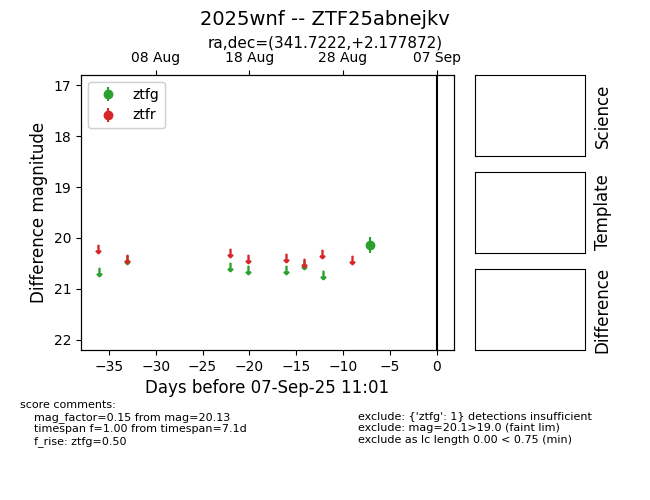

FINK: ZTF25abnejkv
Lasair: ZTF25abnejkv
ALeRCE: ZTF25abnejkv
TNS: 2025wnf
YSE: 2025wnf
ZTF25abnejkv (ztf,fink)
2025wnf (tns,yse)
equatorial (ra, dec) = (341.7222,+2.17787)
galactic (l, b) = (72.2918,-48.06383)

last ztfg=20.13
1 ztfg detections